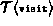
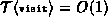
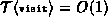

Data Structures and Algorithms
with Object-Oriented Design Patterns in Java
Data Structures and Algorithms
with Object-Oriented Design Patterns in Java
Program  defines the accept
method for the StackAsArray class.
As discussed in Chapter ,
the purpose of the accept method of a container is to accept a visitor
and to cause it to visit one-by-one all of the contained objects.
defines the accept
method for the StackAsArray class.
As discussed in Chapter ,
the purpose of the accept method of a container is to accept a visitor
and to cause it to visit one-by-one all of the contained objects.
Program: StackAsArray class accept method.
The body of the accept method is simply a loop
which calls the visit method for each object in the stack.
The running time of the accept method depends on
the running time of the visit method.
Let  be the running time of the visit method.
In addition to the time for the method call,
each iteration of the loop incurs a constant overhead.
Consequently,
the total running time for accept is  ,
where n is the number of objects in the container.
And if , the total running time is to O(n).
,
where n is the number of objects in the container.
And if , the total running time is to O(n).
 Copyright © 1998 by Bruno R. Preiss, P.Eng. All rights reserved.
Copyright © 1998 by Bruno R. Preiss, P.Eng. All rights reserved.